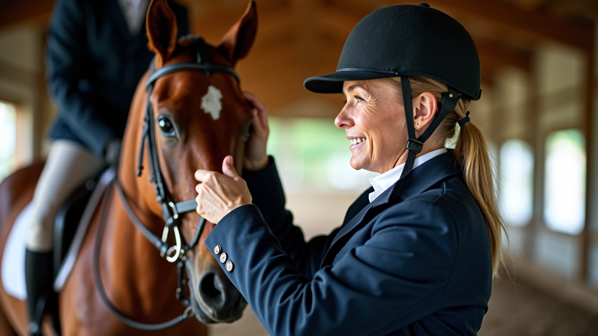
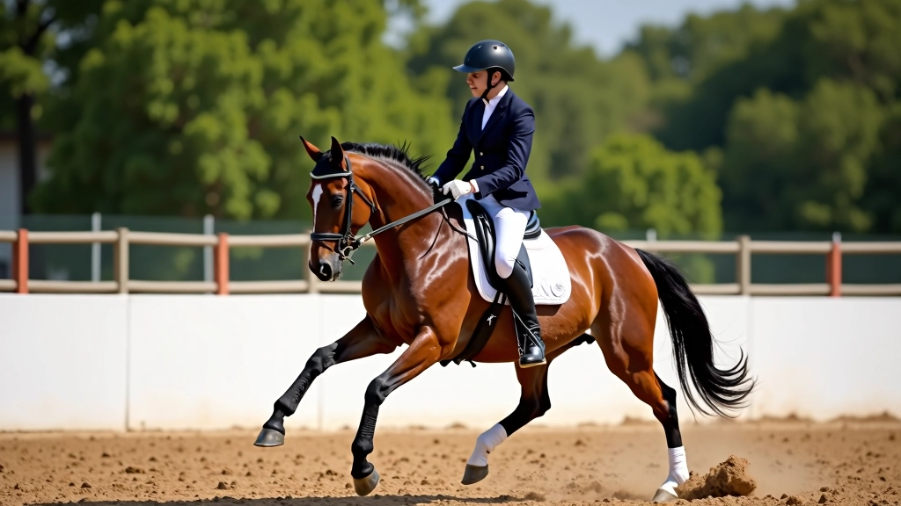
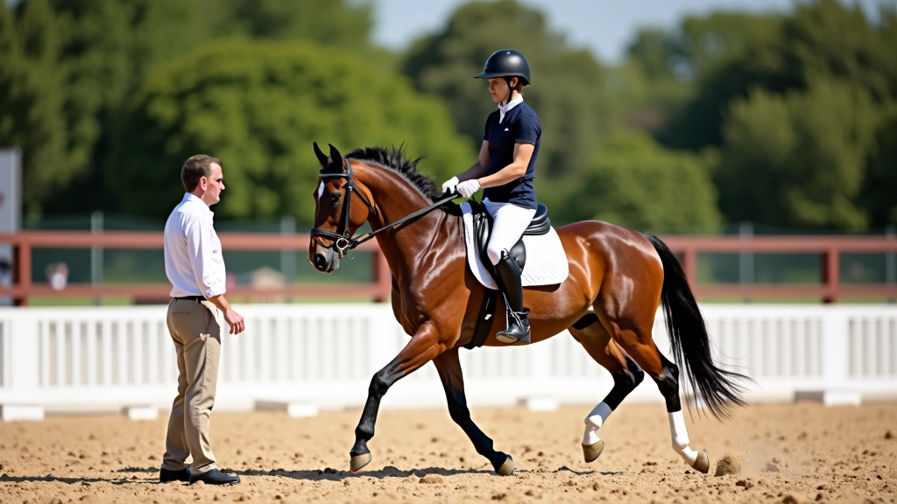
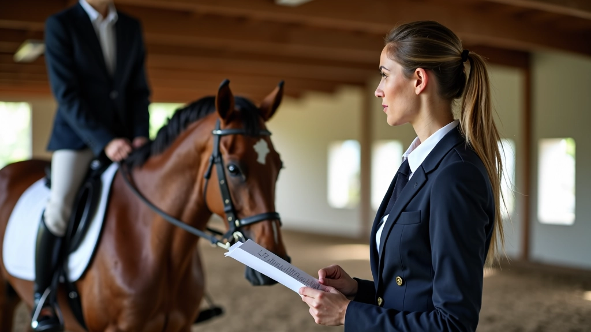
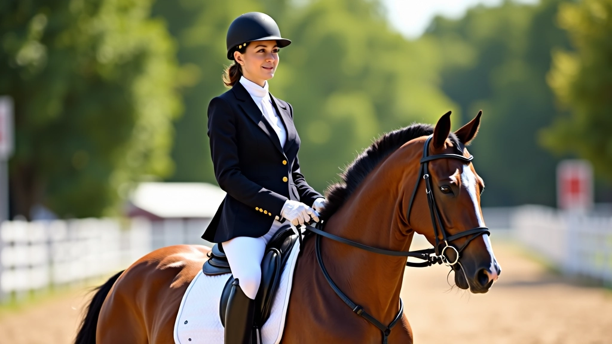

تقنيات التدريب المتقدمة
اكتشف الطرق المتطورة لتحسين أداء حصانك وإتقان تقنيات تغيير القدم بدقة واحترافية عالية
ما هي التقنيات المتقدمة؟
بعد أن يتقن الحصان الأساسيات، يحتاج إلى خطوات متقدمة لتحسين الأداء. نحن نتحدث عن تقنيات تدريبية متخصصة تركز على الدقة والانضباط. هذه ليست مجرد تمارين عادية — إنها طرق مثبتة لتطوير التوازن والسرعة والاستجابة.
المدربون الذين يستخدمون هذه التقنيات يلاحظون تحسناً واضحاً خلال 4-6 أسابيع. الحصان يصبح أكثر ثقة، والراكب يشعر بتحكم أفضل. الشيء المهم أننا لا نركض في هذه المرحلة — نركز على الجودة قبل السرعة.


التحضير النفسي والجسدي
قبل أي تمرين متقدم، يجب تحضير الحصان نفسياً وجسدياً. ما يعنيه هذا فعلياً هو البدء برفق. تمارين الإحماء البطيئة، المشي المنتظم، والانتباه لتنفس الحصان — كل هذا مهم جداً.
يقضي معظم المدربين المحترفين 10-15 دقيقة في الإحماء قبل البدء بالتمارين الثقيلة. أنت لا تريد حصاناً مشدود العضلات أو خائفاً. الحصان الهادئ والمركز يتعلم أسرع بكثير. لاحظ أيضاً تركيزك أنت — إذا كنت متوتراً، سيشعر الحصان بذلك فوراً.
تطوير التوازن والثبات
التوازن هو أساس كل شيء في الركوب المتقدم. يجب على الحصان أن يتعلم توزيع وزنه بشكل صحيح خلال التمارين. هذا يعني تمارين خاصة تركز على القوة الأساسية — الظهر، الأرجل، والرقبة.
من أفضل التمارين: تمارين التحول على نقطة ثابتة (Pivots)، الحركات الجانبية (Lateral movements)، والقفزات المتقاطعة. كل تمرين يستغرق وقتاً ويحتاج صبراً. لا تتوقع نتائج فورية — التقدم الحقيقي يحدث تدريجياً على مدى أسابيع.
نصيحة مهمة: راقب استجابة الحصان لكل تمرين. إذا بدا متعباً أو فقد التركيز، توقف وأعد المحاولة لاحقاً. الإرهاق يضر التدريب أكثر مما يساعد.


التقييم والملاحظة الدقيقة
أحد أكبر الفروقات بين المدربين العاديين والمتقدمين هو القدرة على ملاحظة التفاصيل الصغيرة. كيف يضع الحصان أرجله؟ هل يميل برقبته بزاوية غير صحيحة؟ هل يفقد التركيز بعد عدة تكرارات؟
استخدم مرآة أو اطلب من شخص آخر مراقبتك. كل ملاحظة صغيرة تساعد. إذا لاحظت أن الحصان يميل لجهة معينة، قد تحتاج لتعديل تمارينك. بعض الحصن لديها أضعف جهة — وهذا طبيعي. التدريب المتقدم يعني معالجة هذه النقاط الضعيفة بصبر وتصميم.
ملاحظة مهمة
نتائج التدريب تختلف من حصان لآخر. كل حصان له شخصيته وقدراته الخاصة. ما يناسب حصاناً قد لا ينجح مع آخر. استشر مدرباً متخصصاً قبل تطبيق تقنيات جديدة، خاصة إذا كنت تتدرب لأول مرة.
الخلاصة: التدريب المتقدم يحتاج صبراً
التقنيات المتقدمة في تدريب الخيل ليست معقدة كما قد تبدو. المفتاح هو الاتساق والملاحظة والصبر. لا تحاول تعلم كل شيء في أسبوع واحد. ركز على تقنية واحدة في كل مرة، أتقنها، ثم انتقل للتالية.
ستلاحظ تحسناً تدريجياً في استجابة حصانك، في توازنه، وفي ثقته. وستلاحظ تحسناً في نفسك أيضاً — في صبرك وتركيزك وقراءتك لسلوك الحصان. هذا هو الجزء الحقيقي من التدريب المتقدم.

فريق أكاديمية الأهرام للفروسية التحرير
فريق التحرير والمحتوى
كتبه فريق تحرير أكاديمية الأهرام للفروسية، متخصص في تقديم إرشادات عملية وموثوقة حول تدريب الخيل.
مقالات ذات صلة

أساسيات تغيير القدم في العدو
شرح تفصيلي لكيفية تعليم الحصان تغيير قدمه بشكل صحيح. يتضمن التحضير الأساسي والخطوات الأولى.

تحليل الأخطاء الشائعة
تعرف على أكثر الأخطاء التي يرتكبها المدربون وكيفية تصحيحها بفعالية.

برنامج تدريب شامل 8 أسابيع
خطة منظمة لمدة 8 أسابيع تغطي جميع جوانب التدريب من البداية إلى الإتقان.